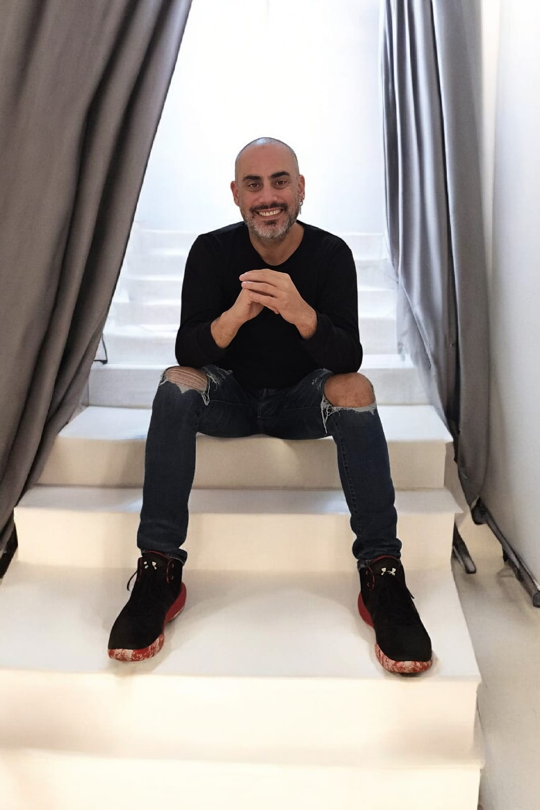

מי אני
מאמן להתפתחות אישית המביא ניסיון עשיר של מעל 15 שנה בניהול פרויקטים וניהול בכיר. השילוב בין העולם העסקי-ניהולי לבין עולם האימון מאפשר לי להציע ליווי פרקטי, ממוקד תוצאות ותהליכי עומק רגשיים. אני מאמין שכל שינוי משמעותי מתחיל בניהול נכון של "הפרויקט" החשוב ביותר שלנו – אנחנו עצמנו.
ה"אני מאמין" שלי
"בסערות החיים, אנחנו לא צריכים רק מפרשים – אנחנו צריכים עוגנים."
לאורך שנותיי כמנהל פרויקטים וכמנהל מוביל צוותים להצלחות, למדתי שהצלחה אינה נמדדת רק בעמידה ביעדים, אלא ביכולת לנהל מערכות יחסים, לגשר על פערים ולבנות חוסן פנימי. אני מאמין שאימון הוא תהליך של לקיחת מנהיגות על חיינו.
הגישה שלי מתמקדת ב:
- יצירת עוגנים: זיהוי הערכים והחוזקות שמעניקים לנו יציבות גם בתקופות של שינוי וחוסר ודאות.
- ניהול התפתחות: שימוש בכלים פרקטיים מעולם הניהול כדי להפוך שאיפות לתוכנית עבודה ממשית בדרך לשינוי.
- ליווי גברים בנקודות מפנה: מלווה באימון אישי גברים לאחר פרידה וגירושים, בדרך לבנייה מחודשת של זהות, חוסן וביטחון עצמי.
תחומי התמחות
- ליווי בתהליכי שינוי, צמיחה ובניית חוסן אישי.
- אימון ממוקד לגברים בתהליכי פרידה וגירושים.
ליצירת קשר
אפשר לפנות בוואטסאפ / מייל / פייסבוק – ואחזור אליכם בהקדם.
